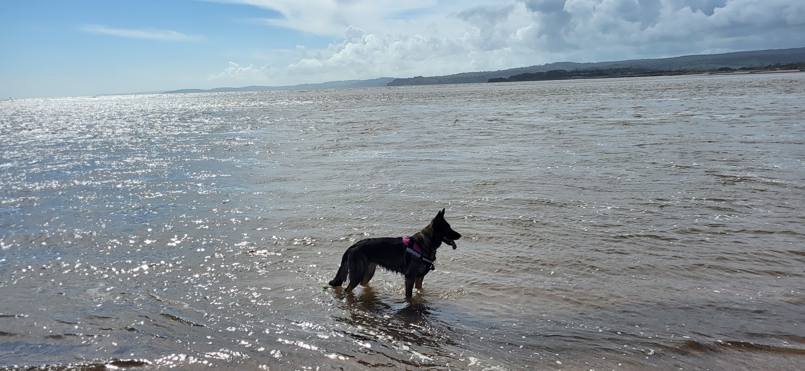

About Me
A brief history of me.

Education
- MSc., Enterprise IT Management | University of Essex (2024 - Present)
- BSc., Physics | University of Surrey (2005 - 2010)
Work Experience
- Haematology and Oncology IT systems and information manager | Portsmouth Hospitals University NHS Trust (April 2023 - Present)
- Radiotherapy IT manager Secondment | Portsmouth Hospitals University NHS Trust (October 2021 - April 2023)
- Senior Dosimetrist - Quality Control Service Manager | Portsmouth Hospitals NHS Trust (August 2014 - October 2021)
- Specialist Medical Physics Technician - Radiotherapy Physics | Portsmouth Hospitals NHS Trust (November 2013 - August 2014)
- Medical Physics Technician - Radiotherapy Physics | Portsmouth Hospitals NHS Trust (January 2011 - November 2013)